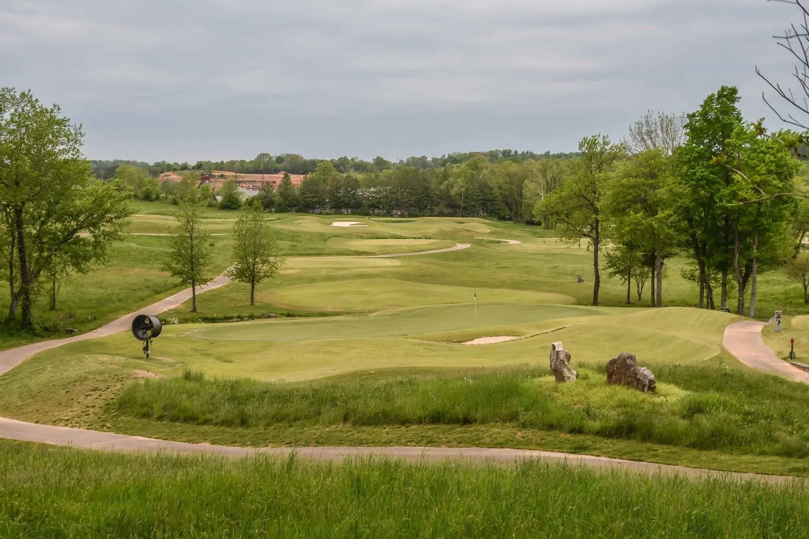

GreyStone Golf Club in Dickson is one of the most respected public golf destinations in the Nashville area — and one of the most decorated. Designed by 10-time PGA Tour winner Mark McCumber, GreyStone has hosted PGA Tour Qualifying School, the Tennessee State Open on multiple occasions, and the 2025 Tennessee State Junior Amateur. It is the kind of course that legitimately challenges scratch golfers while remaining enjoyable for mid-handicappers who play from the right tees.
Located less than 40 miles west of Nashville, GreyStone is a worthy day trip. McCumber's design makes the most of the rolling terrain, with significant elevation changes, numerous mounds that create challenging uneven lies, and natural tall grass framing many holes. Wayward shots are punished, but the strategic variety from hole to hole keeps the round engaging throughout.
GreyStone plays to 7,046 yards from the championship tees at a par 72, making it one of the longer public tracks in Middle Tennessee. The course rating and slope reflect its genuine difficulty — elevation changes, mounded terrain, and natural rough areas create a varied test that differs significantly from the flatter municipal courses closer to Nashville. The average par-3 distance of 196 yards indicates the course demands long-iron and hybrid accuracy.
GreyStone offers competitive rates for the quality and prestige of the facility. Green fees typically run $60–$70 depending on day and season, with cart included. Weekend rates are at the higher end of this range. The course is open Monday through Sunday from 7:00 a.m. to sunset. Call or book online for tee times.
GreyStone's most talked-about hole is the par-4 closing hole, which requires a precise tee shot up a hillside fairway followed by a demanding approach to a well-protected, elevated green. The hole plays longer than its yardage suggests, and the uneven lies created by McCumber's signature mounding make clean ball-striking essential to finish strong. It is the kind of closing hole that separates good rounds from great ones.
GreyStone features a well-stocked pro shop, a full-service driving range, and The Grille — a relaxed restaurant and bar inside the clubhouse. The facility is set up to handle corporate outings and tournament play, with a knowledgeable and professional staff. Event facilities are available for groups of all sizes.
Located at 2555 US-70, Dickson, TN 37055, approximately 40 minutes west of downtown Nashville via I-40. Take I-40 West and exit at Dickson, then follow US-70 East. Call (615) 446-0044 for tee times. Open daily from 7:00 a.m. to 7:00 p.m.